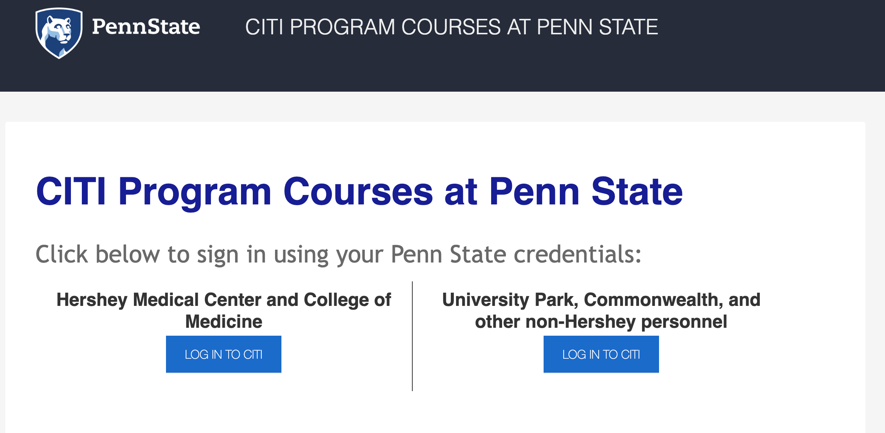
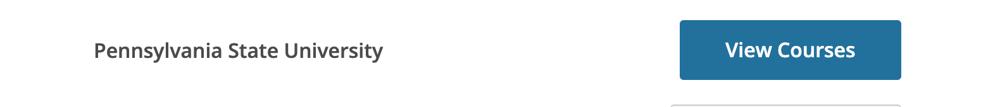
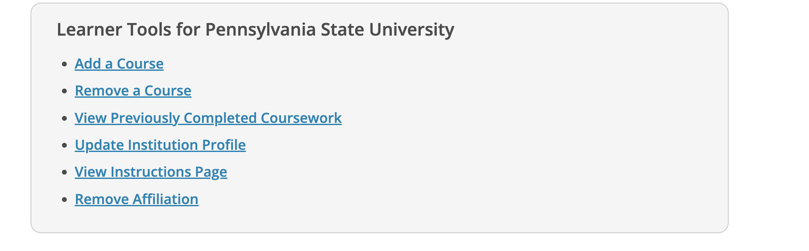
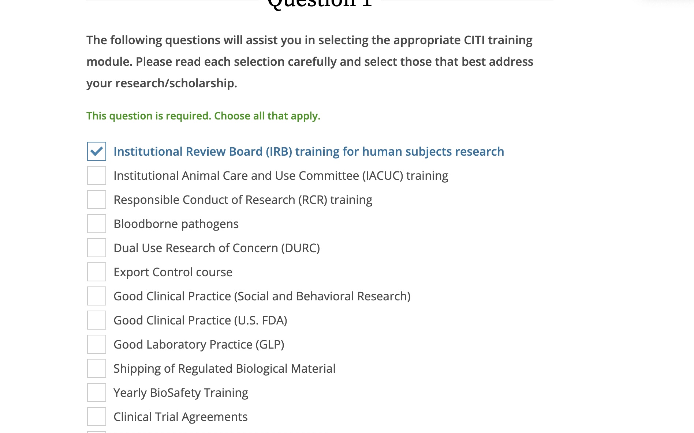
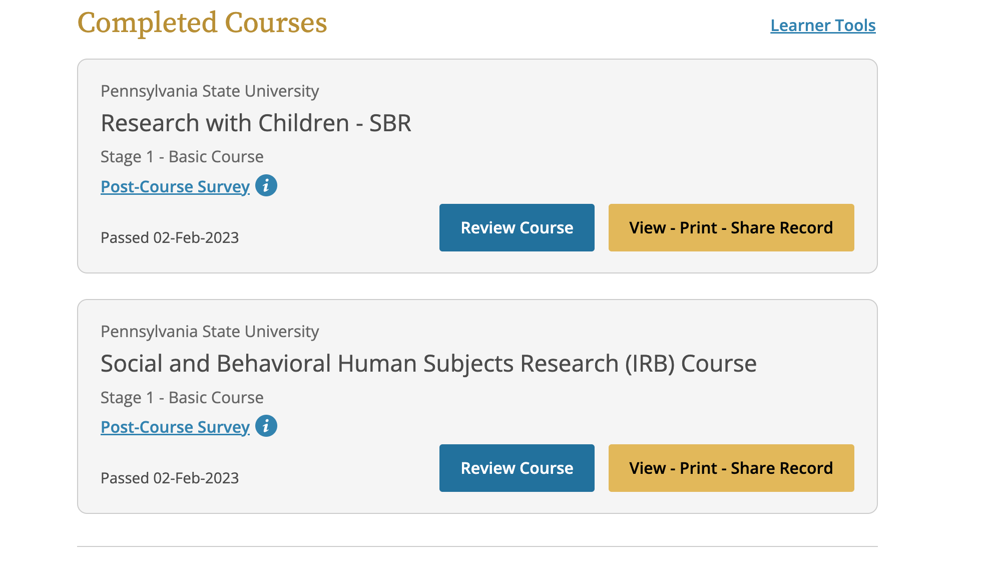

1 Trainings
IRB training
At Penn State, research is governed by an Institutional Review Board (IRB).
All faculty, staff, and students who conduct research need to undergo training from the IRB. There are different training programs for different types of research, e.g., research with human participants or with non-human animals.
In this lab, all students and staff must complete training in the ethics of conducting research with human participants.
CITI Training
The Collaborative Institutional Training Initiative (CITI Program). provides training modules for researchers.
For Access, go to CITI training.
Expiration: every 3 years.










- Choose the
University Park, Commonwealth, and other non-Hershey personneloption
- Click
LOG IN TO CITI
Login = PSU Access ID
Click View Courses next to Pennsylvania State University
If you have never taken an IRB course before
- Under the Learner Tools for Pennsylvania State University click
Add a course
- Choose
Institutional Review Board (IRB) training for human subjects researchthenNext
- Choose
NO, I have Not completed the Human Subjects Research (IRB) Course through CITI. I need to complete the Human Subjects Research (IRB) CoursethenNext
- Choose
Social Science ResearchthenNext
- Choose
Research with ChildrenthenNext
Take the ‘Social and Behavioral Human Subjects Research (IRB) Course’.
Email your training certificate to the lab email once this is complete.
If you have completed this training previously, please email your training certificate.
If you are taking a renewal IRB course
Other PSU-required trainings
Annual Compliance Training
The Penn State compliance training is required for all Penn State employees, graduate students, and students participating in research at Penn State. This training covers ethics and obligation required of a Penn State employee.
To learn more about the compliance training or other trainings at Penn State please visit either of the following links:
https://universityethics.psu.edu/resources-and-training
https://universityethics.psu.edu/resources-and-training/compliance-training-plan
The compliance training has a required renewal of 365 days.
For Access go to the Learning Resource Network
Login with PSU Access Account
- Click the box
Faculty, Staff & Part time
- Then
Login with Access Account

- In the Search box, type
Annual Compliance Training - Choose
2022 Annual Compliance Training

Login with a LRN Account
If you have difficulty logging in go to: http://lrn.psu.edu/
- Select
Volunteer/Non-Paid Student/Other
- Click the box
Volunteer/Student/Other Create LRN Account

- Supervisory Organization: Choose
Affiliate PENN STATE STUDENT
- Location: Choose
Penn State University Park
- Position Type:
Student
- Enter your password
- Click the
I'm not a robotbox
- Click the
Log Inbox
Keep this login information. You will need it to complete these trainings every calendar year.
Email your training certificate to the lab email once this is complete.
Understanding Title IX at Penn State
Employees and anyone with an active Penn State Access Account (WebAccess) should access the training through the Learning Resource Network:
- Click the box
Faculty, Staff & Part time - Then
Login with Access Account - In the Search box, type Title IX
- Choose
Understanding Title IX at Penn StateYou may need to click theRequestButton to take the class again for this year.
If you have difficulty logging in go to the Learning Resource Network with your PSU account:
Select
Volunteer/Non-Paid Student/OtherClick the box
Volunteer/Student/Other Create LRN AccountSupervisory Organization: Choose
Affiliate PENN STATE STUDENTLocation: Choose
Penn State University ParkPosition Type:
StudentEnter your password
Click the
I'm not a robotboxClick the
Log InboxKeep this login information. You will need it to complete training on the LRN site every calendar year.
Email your training certificate to psubrainlab@gmail.com once this is complete.
Building a Safe Penn State: Reporting Child Abuse
Employees and anyone with an active Penn State Access Account (WebAccess) should access the training through the Learning Resource Network:
- Click the box
Faculty, Staff & Part time - Then
Login with Access Account - In the Search box, type Reporting Child Abuse
- Choose
Building a Safe Penn State: Reporting Child AbuseYou may need to click theRequestButton to take the class again for this year.
If you have difficulty logging in go to the Learning Resource Network with your PSU account:
Select
Volunteer/Non-Paid Student/OtherClick the box
Volunteer/Student/Other Create LRN AccountSupervisory Organization: Choose
Affiliate PENN STATE STUDENTLocation: Choose
Penn State University ParkPosition Type:
StudentEnter your password
Click the
I'm not a robotboxClick the
Log InboxKeep this login information. You will need it to complete training on the LRN site every calendar year.
Email your training certificate to psubrainlab@gmail.com once this is complete.
Clery Act Training
Employees and anyone with an active Penn State Access Account (WebAccess) should access the training through the Learning Resource Network:
- Click the box
Faculty, Staff & Part time - Then
Login with Access Account - In the Search box, type Clery Act Training
- Choose
Clery Act TrainingYou may need to click theRequestButton to take the class again for this year.
If you have difficulty logging in go to the Learning Resource Network with your PSU account:
Select
Volunteer/Non-Paid Student/OtherClick the box
Volunteer/Student/Other Create LRN AccountSupervisory Organization: Choose
Affiliate PENN STATE STUDENTLocation: Choose
Penn State University ParkPosition Type:
StudentEnter your password
Click the
I'm not a robotboxClick the
Log InboxKeep this login information. You will need it to complete training on the LRN site every calendar year.
Email your training certificate to psubrainlab@gmail.com once this is complete.